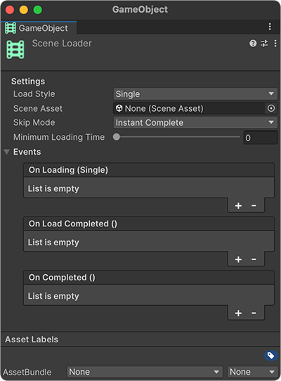
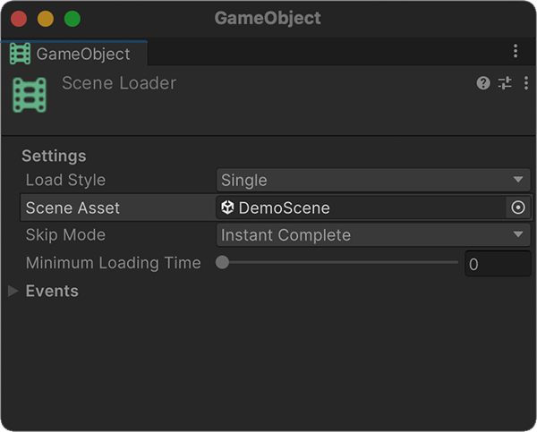
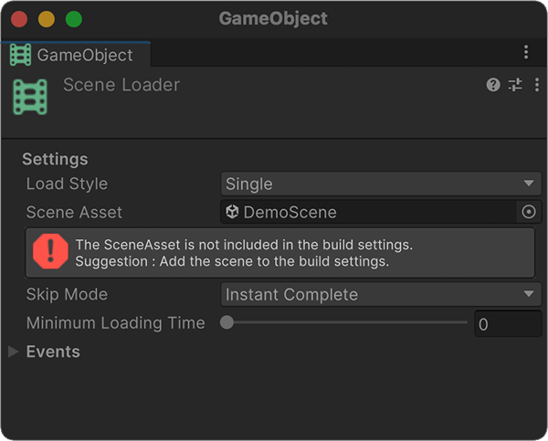
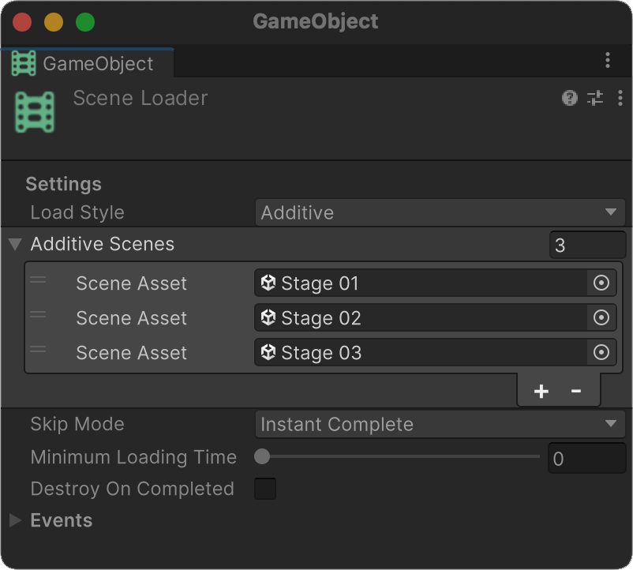

Scene Loader
Scene Loader는 씬을 로드하는 데 사용되는 컴포넌트입니다.
또한, 씬을 로드하는 특성 덕분에 로딩 화면을 구현할 때도 활용할 수 있습니다.
설정

빈 게임 오브젝트에서 'Add Component' 를 클릭하여 Scene Loader 를 추가합니다.

이동하려는 씬에 대하여 씬 에셋을 참조하세요.

추가한 씬이 'Build Settings' 에 없으면 오류 메시지가 표시됩니다.
Load Style
Load Style에는 Single 및 Additive를 제공합니다.
'Additive' 스타일을 사용하면 여러 씬을 동시에 로드할 수 있습니다.
Skip Mode
로딩이 완료되었을 때의 동작을 설정합니다.
| SkipMode | Behavior |
|---|---|
| Instant Complete | 로딩이 완료된 후 즉시 다음 씬으로 활성화합니다. |
| Any Key | 로딩이 완료된 후 아무 키나 누르면 다음 씬이 활성화됩니다. |
| Manual | 로딩이 완료되면 스크립트에서 다음 씬을 수동으로 활성화합니다. |
기타 설정
Minimum Loading Time
씬을 로드한 후 해당 씬으로 이동하는 데 사용되는 최소 시간을 설정합니다.
Destroy On Completed
true로 설정하면 로딩이 완료된 후 Scene Loader 객체가 삭제됩니다.
Tip
'Destroy On Completed'는 Additive Style 또는 Scene Loading 프리팹을 구성할 때 유용합니다.
이벤트
On Loading (Single)
로드하는 동안 호출됩니다.
On Load Completed
씬 로드가 완료되면 호출됩니다.
On Completed
씬 로드가 완료되고 씬이 활성화되면 호출됩니다.